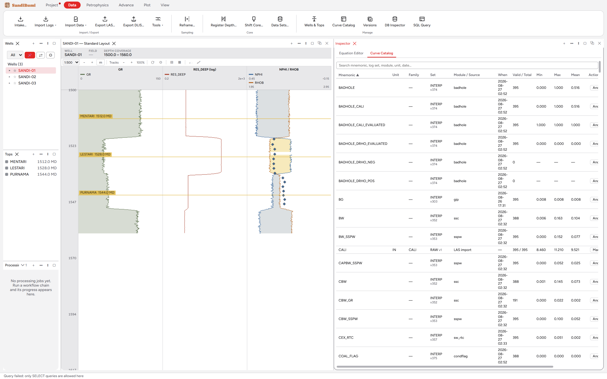

The Inspector pane answers "what curves does this well actually have, and
where did each one come from". Its Curve Catalog tab is the well's curve
inventory with provenance: every mnemonic, its unit and family, the set and
version it lives in, the module or import that wrote it, when, and its
value statistics. Reach for it before trusting any curve you did not just
compute, and whenever two similarly named curves need telling apart.
The pane

The catalog on the example well: computed curves carry the
INTERP set with the version that wrote them (v374 badhole, v303 gip),
while CALI shows RAW v1 from the LAS import with 395 of 395 samples
valid.
The search box filters by mnemonic, log set, module, unit or date, so
"everything the sspw run wrote" or "everything from yesterday" is one
query.
Valid / Total is a finite-value scan, not a row count: a curve
that exists at 395 depths but answers at 191 shows both numbers.
Ancestry on each row opens the curve's custody record: which
run wrote it, from which inputs, under whose declared identity.
Set actions (Mark Final, Promote, Delete) manage
the RAW / EDIT / FINAL life cycle of versioned log sets.
The pane's other tab is the Equation Editor, covered by its own
chapter; the two share the pane because a computed curve and its
formula are usually inspected together.
Step by step
Open Data ▸ Curve Catalog with the well selected.
Search for the curve in question; read its Set column first (which
set, which version), then Module / Source, then Valid / Total.
Press Ancestry when the question is "who wrote this and from
what"; the record travels with the curve into deliverables.
Reading the result
The version column is the bridge to the Versions pane: BG showing
INTERP v303 means the current values of that curve came from run 303, even
though the history has moved on since. That is normal, a curve keeps its
last writer, and it is also the fastest way to notice a curve everyone
assumed was recent is actually months old.
QC and pitfalls
Two curves, one name, different sets. Set RAW has absolute
priority in curve resolution, and other sets are consulted only for
mnemonics RAW lacks; the catalog's Set column is where you see which
copy a module would actually read.
Valid / Total is the footprint check. A curve with the right
name but a suspiciously small valid count may be a different quantity
wearing the mnemonic (the RT class-curve shadowing case in the
unconventional book was caught exactly this way).
Delete here is a data operation. It removes a curve or set the
project reads; prefer Mark Final / Promote for life-cycle moves and
keep deletion for genuine mistakes.